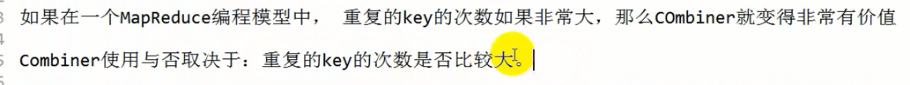
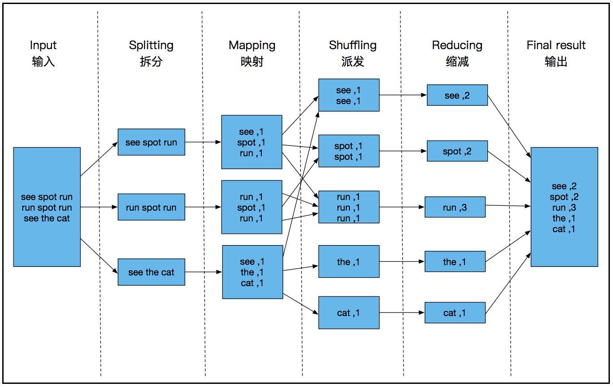
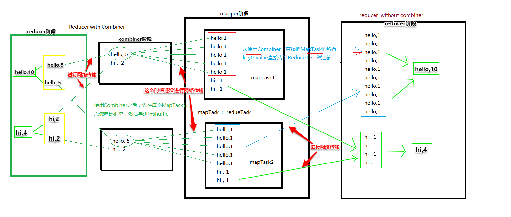
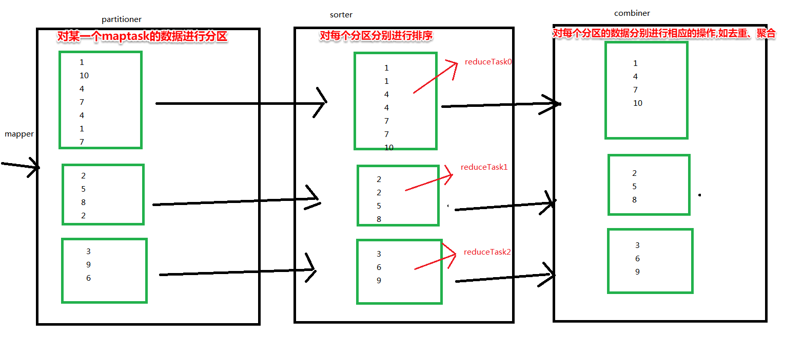

1、combiner的使用
（1）combiner组件的作用
* Combiner 是 MapReduce 程序中 Mapper 和 Reducer 之外的一种组件，它的作用是在maptask
* 之后给 每一个maptask 的结果分别进行局部汇总(也就是说combiner只是把每一个maptask中的结果进行了单独汇总,
*一个maptask一份汇总之后再在reduce阶段对所有maptask的数据再统一汇总一次)，以减轻 reducetask 的计算负载，
* 减少网络传输, 以免在shuffle阶段出现大量的数据在网络传输
*
* combine发送在map阶段之后,shuffle阶段之前,当然也就在reduce阶段之前
* 因为map阶段之后就是shuffle,对数据进行混洗,进行网络传输。如果有combine阶段,
* 先对数据进行局部汇总,会大大减少shuffle混洗的数据的量,减小网络压力，
* 之后再在reduce阶段对数据进行最终的汇总


* combiner的输入key-value类型就是 mapper的输出key value类型
* combiner的输出key-value类型就是 reducer的输入key value类型
* 如果combiner逻辑和reduce逻辑完全一样,可以直接不写,
* 调用combiner时直接将reduce当做combiner来使用
（2）combiner组件的使用
具体使用见

* 在默认的模型实现中是没有自带的Combiner组件的
* 如果没有指定，表示不使用Combiner
*
* 因为在这个计算实现中,reducer类和combiner类的逻辑完全一样,
* 直接使用reducer类来代替combiner类启动combiner组件也是可以的
*
* 一般来说， max， min， sum, count (avg是不能使用的)等逻辑可以使用 Reducer直接充当 Combiner
* 如果 Reducer逻辑的 输入和输出的key-value的类型一致的话， 也基本可用
*
*
* 如果reducer的输入为： key：Text， value : LongWritable
* 输出为： key： Text, value ： IntWritable
* 那显然不能直接使用reducer来代替combiner,
* 因为用reducer的逻辑执行完combiner后,
* 再执行reducer组件,combiner的输出已经不能作为reducer的输入
（3）combiner的作用如图所示：（此图只解释逻辑，没有表示执行顺序，所以不要误以为combiner在map阶段之前）

（4）combiner用法总结

2、序列化机制-二次排序（Sorter组件）
(1)详情见eclipse案例如下图：（主要着手方向是 如何自定义key类型(即图里的Flow类)进行排序，因为排序只能对key进行排序，而无法对value进行排序）

(2)Flow类如何实现:


(3)Mapper阶段的业务逻辑设计思路:

(4)Sort的使用:


3、自定义Partitioner
(1)Partitioner组件的默认实现:


(2)自定义Partitioner的目的主要是按自己的想法对数据进行分区,一个分区启动一个ReduceTask,一个ReduceTask输出一个结果文件
详情见eclipse案例如下图:

(3)Partitioner的相关原理:

(4)ReduceTask如何设置:

4、shuffle阶段的三大组件的执行逻辑

然后对所有maptask依次执行上图所示操作。
—————————————————————手写与上传资料分割线———————————————————————
1、mapreduce简单案例
max
min
avg
sum
count
count distinct
2、两大块内容
序列化框架（用用户自定义的POJO对象作为key）
MapReduce当中的三大核心组件
Sorter
Combiner
Partitioner
围绕三个需求：
1、普通的汇总
结合 Combiner
2、二次排序
1、要把排序的总流量字段提升到 key 当中
2、为了不改变原来的数据的输出样式，那么直接把所有四个字段都看做是一个POJO类的四个属性
3、该pojo对象就可以直接当做key
4、必须对key进行序列化，而且还要指定排序规则
5、mapreduce的key和value都可以有一个为空
异常解释：
1、Initialization of all the collectors failed
如果用户自定义的pojo类充当key, 必须要进行序列化
在每个MapTask的节点上都会有一个输出组件在收集数据。 其实就是一个MapOutBuffer（内存缓冲区： 100M）
mapper中的 context.write(key,value)的key-value会收集到收集器中。
方便后来的shuffle过程中进行分区、排序和聚合
因为context.write(key, value)其实是有可能，而且最终是一定要把key-value序列化到 磁盘文件
那么收集器在每个MapTask运行之前都会进行初始化。 这个收集器在进行初始化的时候。同时也会进行 序列
化器 和 反序列化器的 初始化
3、自定义Partitioner
使用Combiner组件做局部聚合
使用自定义的POJO对象作为key
使用Combine前后的reduce处理的记录数对比：
Combine input records=0
Combine output records=0
Reduce input groups=21
Reduce shuffle bytes=7359666
Reduce input records=304920
Combine input records=304920
Combine output records=21
Reduce input groups=21
Reduce shuffle bytes=673
Reduce input records=21